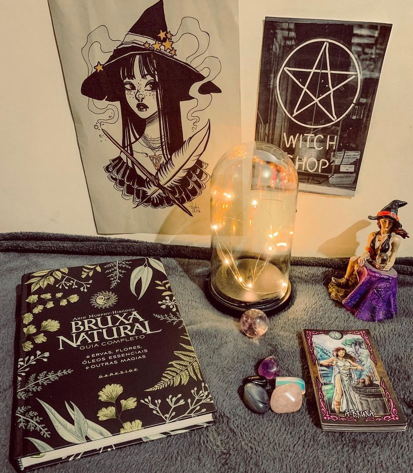

Bruxa Natural
“A figura da bruxa fascina a humanidade há gerações. A crença em bruxas e na magia permeava antigas civilizações e aparece até mesmo na Bíblia. Mulheres independentes e multifacetadas que cultivavam tradições de afinidade com a natureza e foram injustamente acusadas de malefícios. Curandeiras, benzedeiras, avós, mães. O que é ser uma bruxa natural, afinal de contas? É apropriar-se da força interior? É honrar a ancestralidade? É enxergar potencial mágico no mundano?”
Bruxa Natural foi um dos livros que mais desejei em 2021 e posso dizer que atendeu minhas expectativas! Primeiramente pela beleza e acabamento do livro que é simplesmente maravilhoso ! As figuras, capa, tudo…
A segunda coisa foi o conteúdo em si, uma simplicidade de todo ritual apresentado mas, de uma riqueza sem fim!
Se você gosta de assuntos místicos, magia natural, quer saber mais sobre plantas, poções, cristais, frutas, rituais simples o livro sem dúvidas é pra você ! E a edição é impecável.